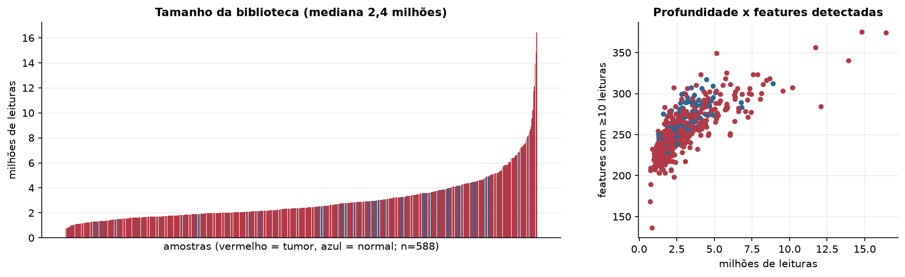
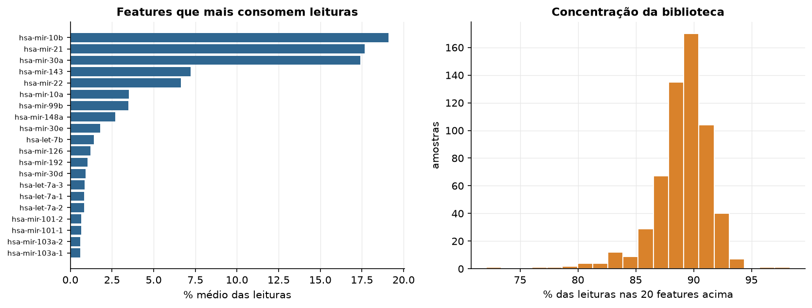
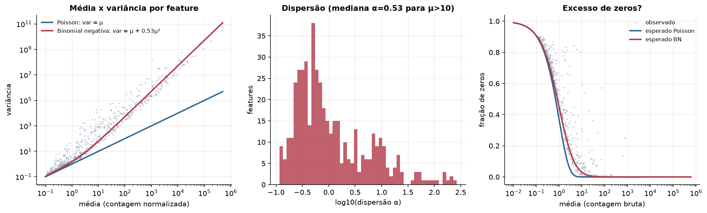
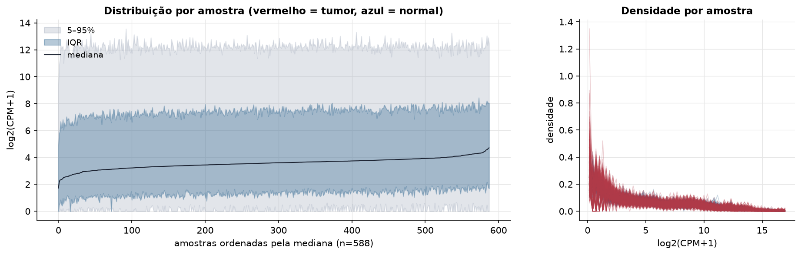
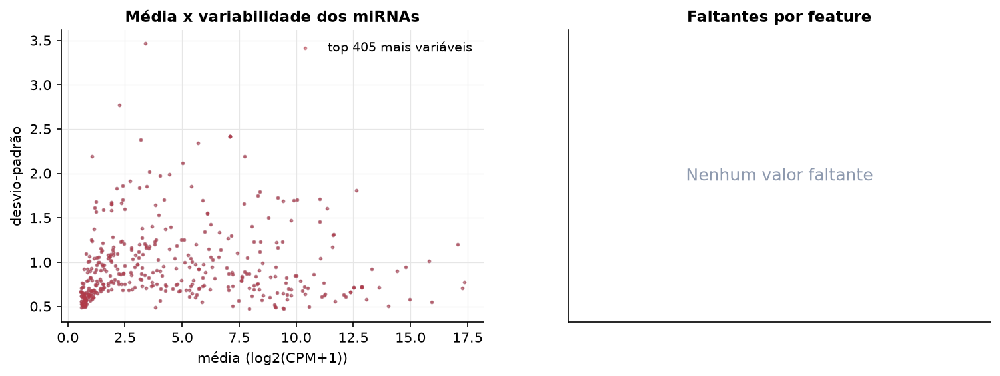
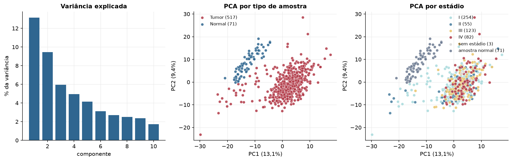
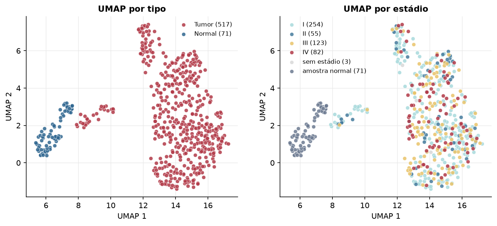
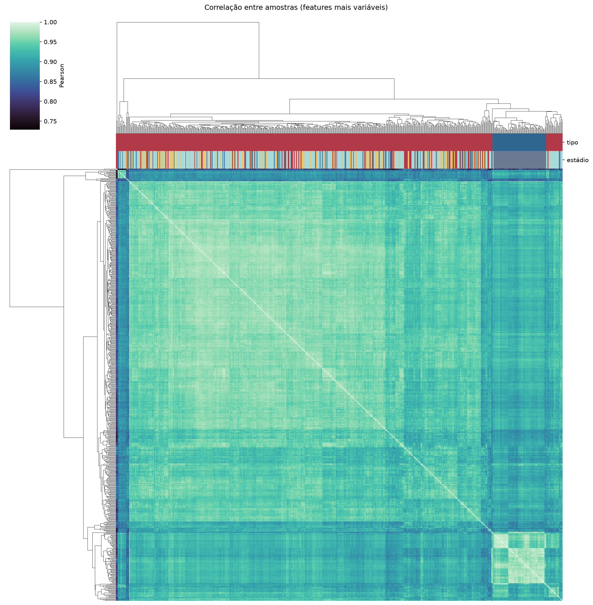
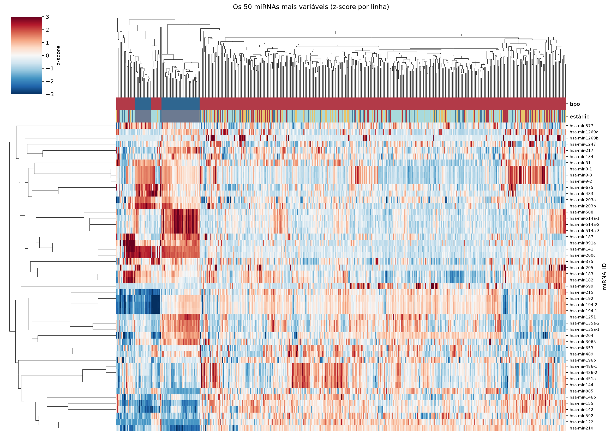
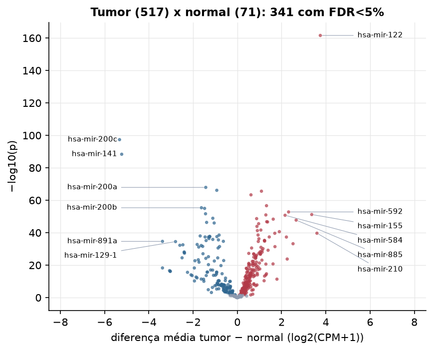

KIRC · miRNA-seq: contagens brutas (GDC)
BCGSC miRNA Profiling (miRBase v21) · gerado em 21/10/2026 22:42
2,4 Mtamanho mediano
0,53dispersão mediana α
405miRNAs
517amostras tumorais
71amostras normais
0,0%valores faltantes
Fonte: API do GDC (BCGSC miRNA Profiling)
Principais resultados
- Bibliotecas de 0,7 a 16,4 milhões de leituras (mediana 2,4). 821 de 1.881 features têm leitura em pelo menos 10% das amostras.
- A variância cresce bem acima da média: a dispersão mediana da binomial negativa é α=0.53 (para features com média > 10). Isso descarta um modelo Poisson e indica binomial negativa (ou Poisson-lognormal) na verossimilhança.
- A fração de zeros é compatível com a binomial negativa (diferença mediana -0,5%); inflação de zeros não parece necessária.
- Em média 89,3% das leituras de cada amostra vão para as 20 features mais abundantes.
- 405 miRNAs medidos em 588 amostras (517 tumorais e 71 normais); 0,0% dos valores estão faltando.
- Os dois primeiros componentes principais explicam 13,1% e 9,4% da variância das features mais variáveis.
- Correlação mediana entre amostras: 0,94.
- Amostras com correlação muito abaixo das demais (possíveis outliers técnicos): TCGA-B0-4688-01, TCGA-BP-4770-01, TCGA-BP-4985-01, TCGA-CZ-4858-01.
- Tumor x normal: 341 miRNAs diferentes com FDR < 5% (194 maiores no tumor, 147 maiores no normal; 71 pacientes têm o par tumor-normal).
- Mais aumentados no tumor: hsa-mir-122, hsa-mir-25, hsa-mir-151a, hsa-mir-181b-1, hsa-mir-592, hsa-mir-155, hsa-mir-181b-2, hsa-mir-584.
- Mais reduzidos no tumor: hsa-mir-200c, hsa-mir-141, hsa-mir-200a, hsa-mir-10b, hsa-mir-200b, hsa-mir-199a-1, hsa-mir-199a-2, hsa-mir-125b-1.
- Associações clínicas com p < 0,05 nos componentes principais: PC1 com estádio (p=1e-05); PC3 com estádio (p=4.7e-05); PC2 com sexo (p=0.011); PC3 com idade (p=0.015); PC1 com sobrevida (p=3.5e-05); PC2 com sobrevida (p=7.6e-05).
Biblioteca


Sobredispersão e zeros

Exploração em log2(CPM+1)
Features com CPM ≥ 1 em pelo menos 20% das amostras (405 features).
Distribuição dos valores


Estrutura das amostras




Tumor x normal

Features mais diferentes entre tumor e normal
| miRNA_ID | diferenca_tumor_menos_normal | t | p | fdr |
|---|---|---|---|---|
| hsa-mir-122 | 3.751 | 42.287 | 2.59e-162 | 1.05e-159 |
| hsa-mir-200c | -5.324 | -45.223 | 4.34e-98 | 8.79e-96 |
| hsa-mir-141 | -5.226 | -41.254 | 4.25e-89 | 5.74e-87 |
| hsa-mir-200a | -1.426 | -23.759 | 1.14e-68 | 1.16e-66 |
| hsa-mir-10b | -0.928 | -21.787 | 7.11e-67 | 5.76e-65 |
| hsa-mir-25 | 1.09 | 27.967 | 2.54e-66 | 1.71e-64 |
| hsa-mir-151a | 0.617 | 21.99 | 4.58e-64 | 2.65e-62 |
| hsa-mir-181b-1 | 1.319 | 23.885 | 2.24e-57 | 1.13e-55 |
| hsa-mir-200b | -1.623 | -22.975 | 4.07e-56 | 1.83e-54 |
| hsa-mir-199a-1 | -1.479 | -20.28 | 1.02e-55 | 4.13e-54 |
| hsa-mir-592 | 2.318 | 21.905 | 1.59e-53 | 5.85e-52 |
| hsa-mir-199a-2 | -1.436 | -19.507 | 2.17e-52 | 7.33e-51 |
| hsa-mir-155 | 3.364 | 26.077 | 6.21e-52 | 1.93e-50 |
| hsa-mir-181b-2 | 1.29 | 22.143 | 1.09e-51 | 3.15e-50 |
| hsa-mir-584 | 2.158 | 27.18 | 1.76e-51 | 4.75e-50 |
| hsa-mir-125b-1 | -1.108 | -19.618 | 1.23e-49 | 3.11e-48 |
| hsa-mir-3941 | 0.874 | 20.048 | 2.12e-49 | 5.04e-48 |
| hsa-mir-2355 | 1.622 | 26.022 | 4.37e-49 | 9.84e-48 |
| hsa-mir-885 | 2.659 | 21.19 | 1.74e-48 | 3.7e-47 |
| hsa-mir-15a | 1.328 | 25.203 | 1.65e-47 | 3.34e-46 |
| hsa-mir-106b | 1.367 | 25.394 | 2.25e-47 | 4.35e-46 |
| hsa-mir-199b | -1.387 | -18.217 | 4.44e-47 | 8.17e-46 |
| hsa-mir-125b-2 | -1.046 | -18.789 | 1.02e-46 | 1.79e-45 |
| hsa-mir-181a-1 | 0.964 | 19.164 | 2.83e-46 | 4.78e-45 |
| hsa-mir-4652 | 0.887 | 15.908 | 1.3e-44 | 2.11e-43 |
| hsa-mir-576 | 1.064 | 19.803 | 2.27e-42 | 3.54e-41 |
| hsa-mir-28 | 0.906 | 20.916 | 4.91e-42 | 7.36e-41 |
| hsa-mir-452 | 1.899 | 20.342 | 2.31e-41 | 3.35e-40 |
| hsa-mir-210 | 3.599 | 23.377 | 2.04e-40 | 2.85e-39 |
| hsa-mir-629 | 1.693 | 22.179 | 2.21e-40 | 2.98e-39 |
Associação com variáveis clínicas
p-valores da associação dos três primeiros componentes principais (só tumores) com estádio (Kruskal-Wallis), sexo (Mann-Whitney), idade (Spearman) e sobrevida global (Cox univariado).
| estádio (Kruskal) | sexo (Mann-Whitney) | idade (Spearman) | sobrevida OS (Cox) | |
|---|---|---|---|---|
| PC1 (12,1%) | 1.03e-05 | 0.749 | 0.076 | 3.52e-05 |
| PC2 (7,8%) | 0.706 | 0.011 | 0.179 | 7.6e-05 |
| PC3 (5,7%) | 4.72e-05 | 0.086 | 0.015 | 2.16e-06 |